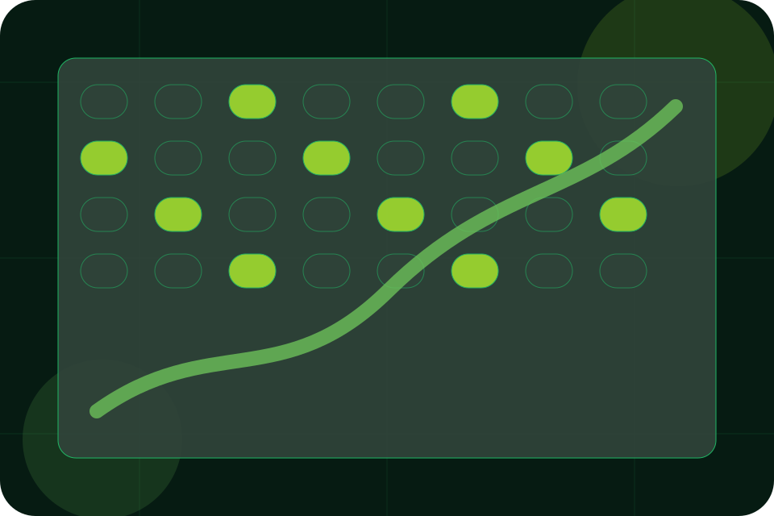

Pricing / 01
Pricing by Field
Pricing shaped for agriculture, farming & rural business decisions.
Pricing opens as a clear agriculture decision hub: what Field offers, who it helps, why it matters, and which route to take first.
The first screen combines positioning, proof, primary action, and fast internal navigation, so people can act immediately or compare the rest of the pricing route with context.
Agriculture scopeCompare optionsRequest advice
Deep-green grow room hero
Plan the season
Select the closest route and Field keeps the next step, proof, and follow-up expectation aligned with seasonal timing and trust.

Pricing / 02
Compare scope and terms
Fees makes commercial comparison easier by showing fit, scope, and terms before agriculture visitors ask for the next step.
The layout keeps price-sensitive decisions honest: it separates starting scope, fuller delivery, and ongoing support so the visitor can ask a sharper question.
View PricingFit
Who the offer is for, which scope it suits, and when a different route may be better.
Scope
What is included clearly enough for agriculture, farming & rural business visitors to compare value without hidden jargon.
Terms
The practical details that should be confirmed before someone asks to plan a visit.
Start
Who the offer is for, which scope it suits, and when a different route may be better.
ScopedGrow
What is included clearly enough for agriculture, farming & rural business visitors to compare value without hidden jargon.
QuotedScale
The practical details that should be confirmed before someone asks to plan a visit.
RetainerPricing / 03
Compare scope and terms
Ranges makes commercial comparison easier by showing fit, scope, and terms before agriculture visitors ask for the next step.
The layout keeps price-sensitive decisions honest: it separates starting scope, fuller delivery, and ongoing support so the visitor can ask a sharper question.
Explore Pricing- 01
Fit
Who the offer is for, which scope it suits, and when a different route may be better.
- 02
Scope
What is included clearly enough for agriculture, farming & rural business visitors to compare value without hidden jargon.
- 03
Terms
The practical details that should be confirmed before someone asks to plan a visit.
Pricing / 04
Compare scope and terms
Packages makes commercial comparison easier by showing fit, scope, and terms before agriculture visitors ask for the next step.
The layout keeps price-sensitive decisions honest: it separates starting scope, fuller delivery, and ongoing support so the visitor can ask a sharper question.
View PricingFit
Who the offer is for, which scope it suits, and when a different route may be better.
Scope
What is included clearly enough for agriculture, farming & rural business visitors to compare value without hidden jargon.
Terms
The practical details that should be confirmed before someone asks to plan a visit.
Start
Who the offer is for, which scope it suits, and when a different route may be better.
ScopedGrow
What is included clearly enough for agriculture, farming & rural business visitors to compare value without hidden jargon.
QuotedScale
The practical details that should be confirmed before someone asks to plan a visit.
RetainerPricing / 05
Compare scope and terms
Delivery makes commercial comparison easier by showing fit, scope, and terms before agriculture visitors ask for the next step.
The layout keeps price-sensitive decisions honest: it separates starting scope, fuller delivery, and ongoing support so the visitor can ask a sharper question.
Explore PricingFit
Who the offer is for, which scope it suits, and when a different route may be better.
Pricing / 06
Compare scope and terms
Bulk makes commercial comparison easier by showing fit, scope, and terms before agriculture visitors ask for the next step.
The layout keeps price-sensitive decisions honest: it separates starting scope, fuller delivery, and ongoing support so the visitor can ask a sharper question.
Explore PricingFit
Who the offer is for, which scope it suits, and when a different route may be better.
Scope
What is included clearly enough for agriculture, farming & rural business visitors to compare value without hidden jargon.
Terms
The practical details that should be confirmed before someone asks to plan a visit.
Pricing / 07
Compare scope and terms
Terms makes commercial comparison easier by showing fit, scope, and terms before agriculture visitors ask for the next step.
The layout keeps price-sensitive decisions honest: it separates starting scope, fuller delivery, and ongoing support so the visitor can ask a sharper question.
Explore PricingWho the offer is for, which scope it suits, and when a different route may be better.
What is included clearly enough for agriculture, farming & rural business visitors to compare value without hidden jargon.
The practical details that should be confirmed before someone asks to plan a visit.
Pricing / 08
Stories behind quote
Quote converts customer proof into a useful buying signal: the problem, the experience, and what changed afterward.
Proof stays believable by focusing on situation, service experience, and practical change rather than vague praise or unsupported results.
Plan VisitSituation
What the visitor needed before choosing Field, written with enough context to feel real.
Experience
How the service, product, or support felt during the process, not just that it was good.
Change
What became easier to decide, complete, buy, book, or trust after the interaction.
Pricing / 09
Compare scope and terms
Payment makes commercial comparison easier by showing fit, scope, and terms before agriculture visitors ask for the next step.
The layout keeps price-sensitive decisions honest: it separates starting scope, fuller delivery, and ongoing support so the visitor can ask a sharper question.
Explore PricingFit
Who the offer is for, which scope it suits, and when a different route may be better.
Scope
What is included clearly enough for agriculture, farming & rural business visitors to compare value without hidden jargon.
Terms
The practical details that should be confirmed before someone asks to plan a visit.
Pricing / 10
Plan Visit
Field closes the pricing route with a clear action, a quick reminder of the value, and a low-friction way to plan a visit.
Visitors who are ready can use the primary action. Visitors who are still comparing can scan the section links, proof, and support routes before they plan a visit.
Plan VisitThe final block keeps the choice simple: act now, compare one more proof route, or send enough detail for a focused response.
Plan Visitseasonal timing and trust
Plan Visit
A controlled-agriculture site with vertical growing surfaces, yield metrics, season planning, and visit routes. Pricing ends with a direct path to plan a visit, plus enough context for visitors who still need to compare.
Important notes before you act
Information is provided for planning and should be reviewed for the final client, location, and operating rules.